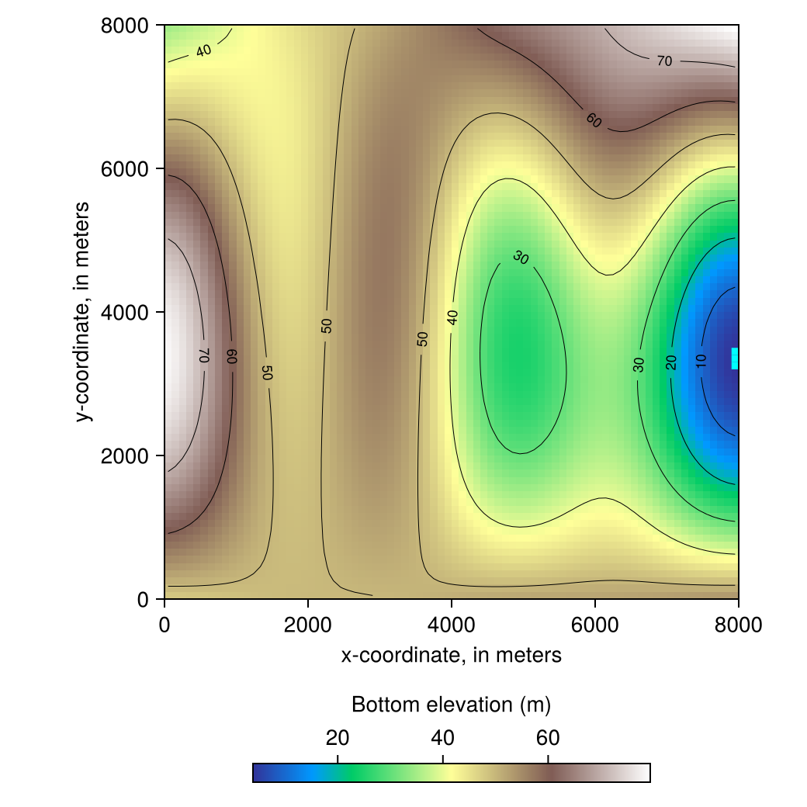
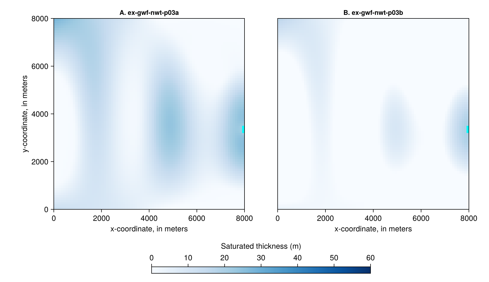

A water table over a rough bottom
Problem 3 of the MODFLOW-NWT documentation (Niswonger and others, 2011): one unconfined layer of 80 × 80 cells of 100 m with an irregular, hilly bottom, recharge that varies over the model, and four constant-head cells on the east edge. Where the bottom rises above the water table the aquifer is dry, and the flow goes around those areas. The problem is solved with the Newton–Raphson formulation (NEWTON UNDER_RELAXATION); without it the dry cells would drop out of the model. Steady state; units are metres and days.
The MODFLOW 6 example ex-gwf-nwt-p03 solves it with two recharge rates: a low one (-p03a) and a high one (-p03b), which wets more of the bottom and is the harder problem for the solver.
Input and the MODFLOW 6 runs
ExampleTools (docs/ExampleTools.jl in the repository) takes the input from the released mf6examples.zip, sets the tight closures of the parity tests in the IMS file, and runs MODFLOW 6.8.2.
using ModflowGPU, CairoMakie
names = ("ex-gwf-nwt-p03a", "ex-gwf-nwt-p03b")
mf6 = Dict(n => example_run(n) for n in names)
[(n, mf6[n].mode, mf6[n].mf6_time) for n in names]2-element Vector{Tuple{String, String, Float64}}:
("ex-gwf-nwt-p03a", "tight", 1.890647416)
("ex-gwf-nwt-p03b", "tight", 27.572834461)The ModflowGPU runs
On the CPU with the default options, -p03a in :double and :single. -p03b runs in :double and :mixed: its Newton iterations do not converge in Float32 (in :double, MODFLOW 6 needs 159 outer iterations, with inner solves that stop at INNER_MAXIMUM and head changes of more than 1000 m on the way; see Comparing results).
presets = Dict("ex-gwf-nwt-p03a" => (:double, :single), "ex-gwf-nwt-p03b" => (:double, :mixed))
runs = Dict(n => Dict(p => run_modflowgpu(mf6[n].dir, p) for p in presets[n]) for n in names)
[(n, p, runs[n][p].result.converged, sum(s -> s.outer.iterations, runs[n][p].result.steps)) for n in names for p in presets[n]]4-element Vector{Tuple{String, Symbol, Bool, Int64}}:
("ex-gwf-nwt-p03a", :double, 1, 9)
("ex-gwf-nwt-p03a", :single, 1, 8)
("ex-gwf-nwt-p03b", :double, 1, 96)
("ex-gwf-nwt-p03b", :mixed, 1, 88)The model
The bottom elevation (the same in both variants) and the constant-head cells (cyan).
g = read_dis_grid(mf6[names[1]].dir)
bot = g.botm[:, :, 1]
chd = [cell_of(g, n) for n in input_nodes(mf6[names[1]].dir, "CHD")]
fig = Figure(; size = (520, 520))
ax = Axis(fig[1, 1]; aspect = DataAspect(), xlabel = "x-coordinate, in meters", ylabel = "y-coordinate, in meters")
hm = map_heatmap!(ax, g, bot; colormap = :terrain)
map_contour!(ax, g, bot; levels = 0:10:100, color = :black, linewidth = 0.5, labels = true, labelsize = 9)
map_cells!(ax, g, chd; color = :cyan)
limits!(ax, extrema(g.xe)..., extrema(g.ye)...)
Colorbar(fig[2, 1], hm; vertical = false, label = "Bottom elevation (m)", width = Relative(0.6))
save_figure(fig, "ex-gwf-nwt-p03-bottom")
Saturated thickness
The saturated thickness (head minus bottom) of both variants, as in the MF6 example; white cells are dry (the head is below the bottom), cyan the constant heads.
fig = Figure(; size = (900, 520))
hms = []
for (i, n) in enumerate(names)
local h = read_head(open_head_file(runs[n][:double].result.head_file), 1)[:, :, 1]
local sat = h .- bot
sat[sat .<= 0] .= NaN
local ax = Axis(fig[1, i]; aspect = DataAspect(), title = "$(('A':'B')[i]). $n", titlesize = 12, xlabel = "x-coordinate, in meters", ylabel = i == 1 ? "y-coordinate, in meters" : "")
push!(hms, map_heatmap!(ax, g, sat; colorrange = (0, 60), colormap = :Blues))
map_cells!(ax, g, chd; color = :cyan)
limits!(ax, extrema(g.xe)..., extrema(g.ye)...)
i == 2 && hideydecorations!(ax; grid = false)
end
Colorbar(fig[2, 1:2], last(hms); vertical = false, label = "Saturated thickness (m)", width = Relative(0.5))
save_figure(fig, "ex-gwf-nwt-p03-saturation")
Comparison with MODFLOW 6
The largest head and budget differences (cells whose MODFLOW 6 head is below the bottom are dry and left out: their head is not unique, see Differences from MODFLOW 6), next to the values of the parity table, and the wall times (CPU: this build, including compilation for the first run of the session; GPU: the parity table, AMD Radeon RX 7800 XT). The models write no budget file, so the budget column compares the listing tables only.
stats = Dict(n => Dict(p => (; cmp = compare_with_mf6(mf6[n].dir, runs[n][p]), runs[n][p].time) for p in presets[n]) for n in names)
comparison_table("ex-gwf-nwt-p03a", stats["ex-gwf-nwt-p03a"])| Preset | max |Δh| (m), this build | max |Δh| (m), parity table | Budget, this build | Budget, parity table | CPU time, this build (s) | GPU time, parity table (s) |
|---|---|---|---|---|---|---|
:double | 1.2e-09 | 1.2e-09 | 1.1e-16 | 1.1e-16 | 0.27 | 0.09 |
:single | 2.6e-05 | 2.6e-05 | 3.4e-07 | 3.4e-07 | 0.18 | 0.06 |
Budget: the largest difference of a budget-file flow or a listing-table rate, relative to the total inflow of its time step.
comparison_table("ex-gwf-nwt-p03b", stats["ex-gwf-nwt-p03b"])| Preset | max |Δh| (m), this build | max |Δh| (m), parity table | Budget, this build | Budget, parity table | CPU time, this build (s) | GPU time, parity table (s) |
|---|---|---|---|---|---|---|
:double | 1.8e-08 | 1.8e-08 | 0 | 0 | 3.19 | 0.92 |
:mixed | 1.7e-08 | 1.7e-08 | 0 | 0 | 3.11 | 0.87 |
Budget: the largest difference of a budget-file flow or a listing-table rate, relative to the total inflow of its time step.